Lecture 3: Analisis Variabel Kompleks
1. Function of a complex variable
Let S be a set complex numbers. A function f defined on S is a rule that assigns to each z in S a complex number w.
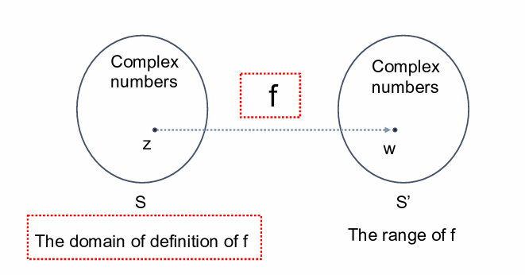
Suppose that $ w = u + iv $ is the value of a function \(f\) at \(z = x + iy\), so that $$ u + iv = f(x+iy) $$ Thus each of real number u and v depends on the real variables x and y, meaning that $$ f(z) = u(x,y) + iv(x,y) $$ Similarly if the polar coordinates r and θ, instead of x and y, are used, we get $$ f(z) = u(r,\theta) + iv(r,\theta) $$
- Example
If \(f(z)=z^2\), then case #1 : $ z = x + iy $ $$ f(z) = (x+iy)^2 = x^2 - y^2 + i2xy $$ $$ u(x,y) = x^2 - y^2 ; v(x,y) = 2xy $$
case #2 : $ z = re^{i\theta} $ $$ f(z) = (re^{i\theta})^2 = r^2e^{i2\theta} = r^2 \cos 2\theta + ir^2 \sin 2\theta $$ $$ u(r,\theta) = r^2 \cos 2\theta ; v(r,\theta) = r^2 \sin 2\theta $$
- Example
A real-valued function is used to illustrate some important concepts later in this chapter is $$ f(z) = |z|^2 = x^2 + y^2 + i0 $$
- Polynomial function $$ P(z) = a_0 + a_1z + a_2z^2 + \dots + a_nz^n $$ where n is zero or a positive integer and $ a_0, a_1, \dots a_n $ are complex constants, \(a_n\) is not 0;
Note
The domain of definition is the entire z plane
-
Rational function
the quotients \(P(z)/Q(z)\) of polynomials
Note
The domain of definition is \(Q(z)\neq0\)
-
Multiple-valued function
A generalization of the concept of function is a rule that assigns more than one value to a point z in the domain of definition. 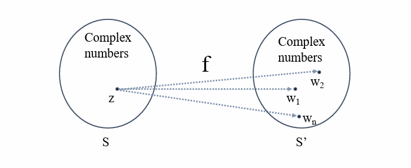
-
Example
Let $ z $ denote any nonzero complex number, then \(z^{1/2}\) has the two values $$ z^{1/2} = \pm \sqrt{r} \exp(i \frac{\theta}{2}) $$ If we just choose only the positive value of \(\pm \sqrt{r}\) $$ z^{1/2} = \sqrt{r} \exp(i \frac{\theta}{2}), r > 0 $$
2. Mappings
- Graphs of Real-value function 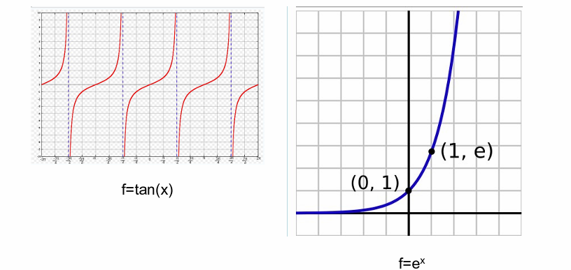
Note
Note that both \(x\) and \(f(x)\) are real values.
- Complex-value functions
$$ f(z) = f(x+yi) = u(x,y) + iv(x,y) $$ 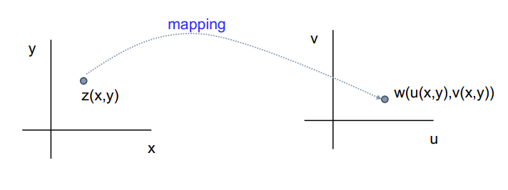
Note
Note that here $ x, y, u(x,y) $ and $ v(x,y) $ are all real values.
- Examples
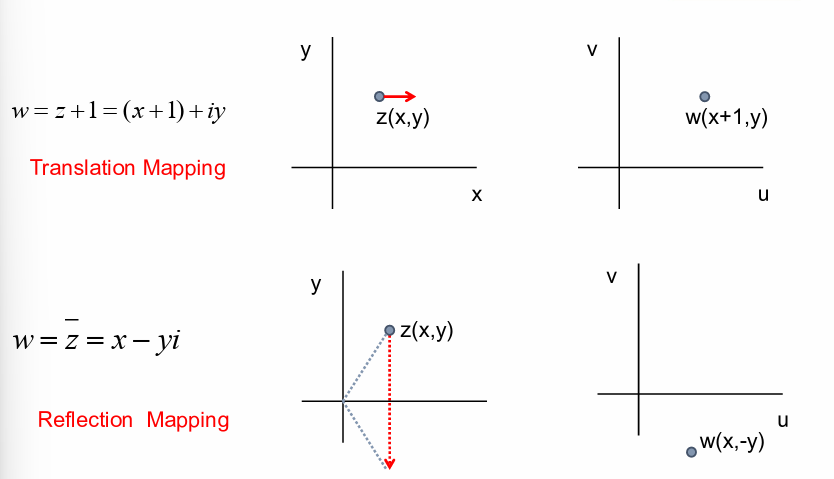
- Examples
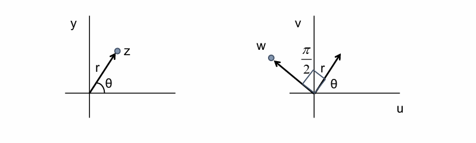
- Example 1
$ w = u(x,y) + jv(x,y)$, where $ u = x^2 - y^2 $, $ v = 2xy $
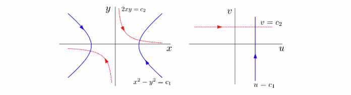
-
explanation:
- for $ c_1 > 0, x^2 - y^2 = c_1$ is mapped onto the line $ u = c_1 $
- if $ u = c_1 $ then $ v = \pm\sqrt{y^2+c_1} $ , where $ -\infty < y < \infty $
- for $ c_2 > 0, 2xy = c_2 $ is mapped into the line $ v = c_2 $
- if $ v = c_2 $ then $ u = {c_2^2}/{4y^2} - y^2 $ where $ -\infty < y < 0 $, or
- if $ v = c_2 $ then $ u = x^2 - {c_2^2}/{4x^2}, 0 < x < \infty $
-
Example 2
The domain $ x>0, y>0, xy<1 $ consists of all points lying on the upper branches of hyperbolas 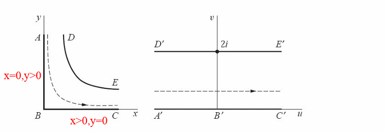
$ u = x^2 - y^2 ;$
$v = 2xy = 2 \Rightarrow xy = 1 $
- Example 3
$ w = z^2 = r^2e^{i2\theta} $ In polar coordinate 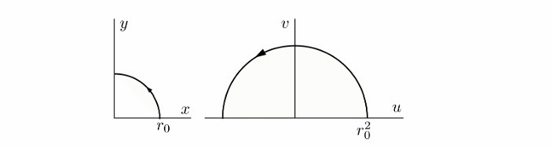
the mapping $ w = r^2 e^{j2\theta} = \rho e^{j\theta} $ where $$ \rho = r^2, \phi = 2\theta $$
- explanation:
- the image is found by squaring the modulus by doubling the value \(\theta\)
- we map first quadrant onto the upper half plane $\rho \ge 0, 0 \le \phi \le \pi $
- we map the upper half plane onto the entire $ w $ plane
3. Mappings by the Exponential Function
- Example 1
$ w = e^z = e^{x+iy} = $ \(e^x e^{iy}\) $ , z = x + iy $
Note
Notice that, $ e^x e^{iy} $ is in a form $ \rho e^{i\theta}. $ Where, $\rho = e^x, \theta = y $
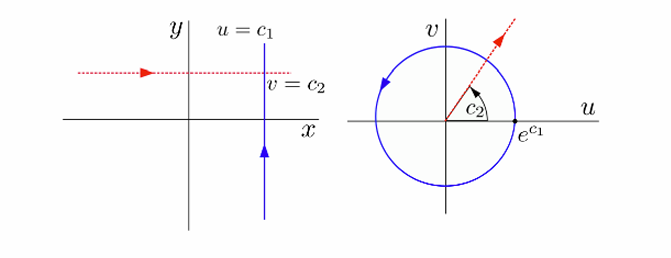
-
explanation:
- a vertical line $ x = c_1 $ is mapped into the circle of radius $ c_1 $
- a horizontal line $ y = c_2 $ is mapped into the ray $ \phi = c_2 $
-
Example 2 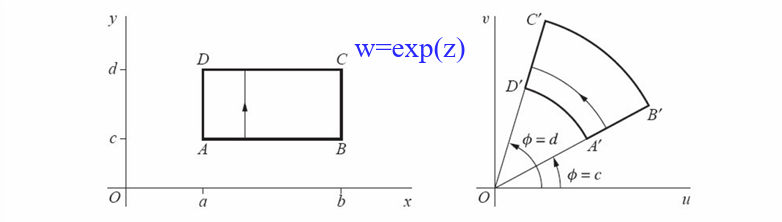
-
Example 3 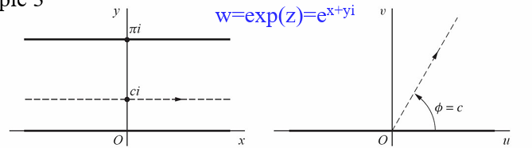
3. Limits
- For a given positive value \(\epsilon\), there exists a positive value \(\delta\) (depends on \(\epsilon\)) such that
when $ 0 <|z-z_0| < \delta $, we have $ |f(z)-w_0|< \epsilon $
meaning the point $ w=f(z) $ can be made arbitrarily close to $ w_0 $ if we choose the point \(z\) close enough to \(z_0\) but distinct from it.
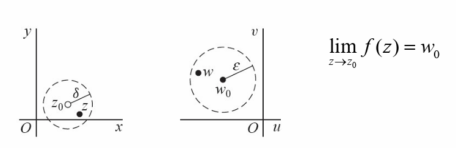
example: let $ f(z) = 2j \bar z $, show that $\lim_{z\to 1} f(z) = 2j $
we must show that for any \(\epsilon > 0\), we can always find $\delta > 0 $ such that $$ |z - 1| < \delta \Rightarrow |2j \bar{z} - 2j| < \epsilon $$ if we express $ |2j \bar{z} - 2j| $ in terms of $ |z-1| $ by $$ |2j \bar{z} - 2j| = 2|\bar{z}-1| = 2|z-1| $$ hence if $\delta = \epsilon/2 $ then $$ |f(z) - 2j| = 2|z-1| < 2\delta < \epsilon $$ \(f(z)\) can be made arbitrarily close \(2j\) by making \(z\) close to 1 enough
how close? determined by \(\delta\) and \(\epsilon\)
- Example 1
Show that $f(z)=i\bar{z}/2 $ in the open disk \(|z|<1\), then
Proof: $$ \lim_{z\to1} f(z)=\frac{i}{2} $$ $$ |f(z)-\frac{i}{2}|=|\frac{i\bar {z} }{2} - \frac{i}{2}|=\frac{|i||\bar{z}-1|}{2}=\frac{|z-1|}{2} $$ \(\forall \epsilon>0, \exist \delta=2\epsilon, s.t.\)
when \(0<|z-1|<\delta(=2\epsilon)\)
$\Rightarrow 0<\frac{|z-1|}{2}<\epsilon \Rightarrow |f(z) - \frac{i}{2}| < \epsilon $
- Example 2
Remarks:
- when a limit of \(f(z)\) exists at \(z_0\) it is unique
- if the limit exists, $ z \rightarrow z_0 $ means \(z\) approaches \(z_0\) in any arbitrary direction
example: let $f(z) = z/\bar{z} $
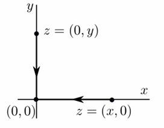
- if $ z = x $ then $ f(z) = \frac{x+j0}{x-j0} = 1 $ as $z \rightarrow 0, f(z) \rightarrow 1 $ along the real axis
- if $ z = jy $ then $ f(z) = \frac{0+jy}{0-jy} = -1 $ as $z \rightarrow 0, f(z) \rightarrow -1 $ along the imaginary axis
since a limit must be unique, we conclude that $ \lim_{z\to0} f(z) $ does not exist
3.1 Theorems on Limits
Theorem suppose $ f(z) = u(x,y) + jv(x,y) $ and $$ z_0 = x_0 + jy_0, w_0 = u_0 + jv_0 $$ then \(\lim_{z\to z_0}f(z)=w_0\) if and only if $$ \lim_{(x,y)\to(x_0,y_0)} u(x,y) = u_0 $$ and $$ \lim_{(x,y)\to(x_0,y_0)} v(x,y) = v_0 $$
Theorem suppose \(\lim_{z\to z_0} f(z) = w_0\) and $\lim{z\to z_0} g(z) = c_0 $ then
- $ \lim_{z\to z_0} [f(z)+g(z)] = w_0 + c_0 $
- $ \lim_{z\to z_0} [f(z)g(z)] = w_0c_0 $
- $ \lim_{z\to z_0} \frac{f(z)}{g(z)} = w_0/c_0 $ if $ c_0 \neq 0 $
It is easy to verify the limits $$ \lim_{z\to z_0} c = c \qquad \lim_{z\to z_0} z = z_0 \qquad \lim_{z\to z_0} z^n = z_0^n (n = 1,2,...) $$ For the polynomial $$ P(z) = a_0 + a_1z + a_2z^2 + ... + a_nz^n $$ We have that $$ \lim_{z\to z_0} P(z) = P(z_0) $$